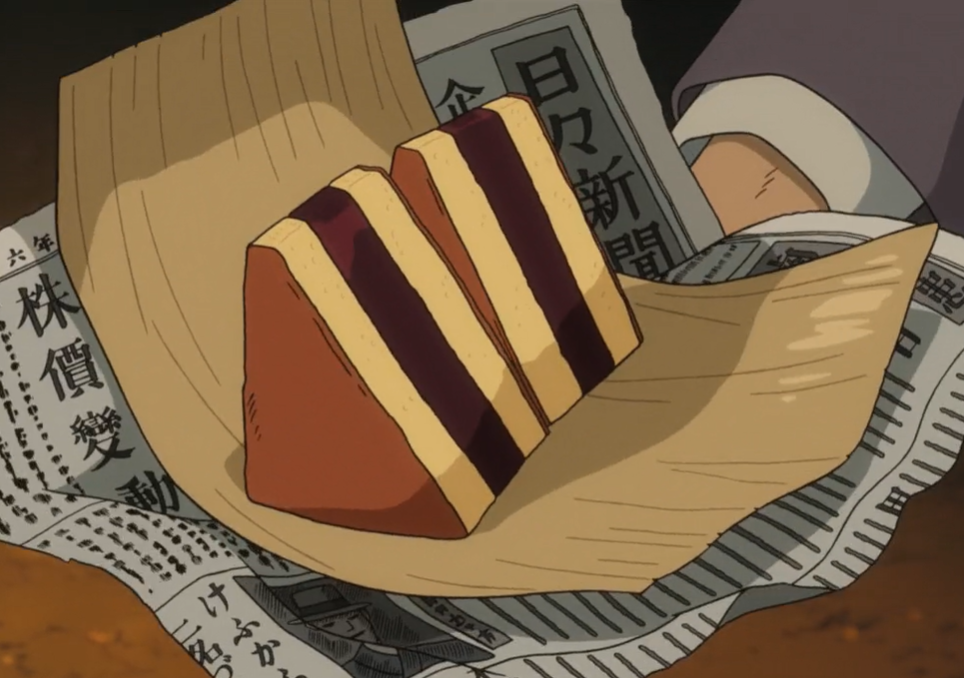

Wrapped in nostalgia, and newspaper — inspired by *The Wind Rises*. ✈️☕
Red bean paste sandwiched between two soft, jiggly, eggy sponge layers. Wrapped in newspaper, these are perfect with some English tea to get you inspired to design fighter planes. It’s guaranteed that this will taste better than that of the train station’s street vendor. Yield: 4 servings Prep time: 30 minutes Cook time: 1 hour, 20 minutes
Ingredients
Castella Sponge Cake:
½ cup butter
¾ cup whole milk
7 large eggs
¾ cup + 1 tbsp bread flour
1 tsp vanilla extract
1 tsp lemon zest
1 tsp lemon juice
¾ cup superfine sugar
Red Bean Filling:
½ cup water
1 tbsp gelatin powder
1 lb red bean paste (see Red Bean Bao recipe)

📐 Precision and sweetness in every slice — Jiro would be proud.
Instructions
In a small pot over low heat, whisk the butter and milk until combined and the butter has melted fully. Set aside.
Separate the egg whites and egg yolks into 2 bowls—whites in 1 bowl, yolks in another.
Into a large bowl, sift the flour. Add the warm butter-milk mixture and stir until well combined. Slowly add in 1 egg yolk at a time and mix, until the batter becomes thicker. Stir in the vanilla extract and lemon zest.
In a medium bowl of a stand mixer, add the lemon juice to the egg whites and whip until foamy. The lemon juice will stabilize the egg whites so that they will not collapse. Slowly start adding the sugar to the egg whites and whip the mixture until medium peaks form. Your whipped egg whites should hold their shape very well, but the tip of the peaks should curl over when you lift the beaters.
In 3 separate portions, fold the egg-white mixture into the batter using a spatula, until just combined. Do not overmix.
Pour the batter into 2 greased and lined 4 x 8.5-inch rectangular cake pans. Lightly drag a toothpick through the batter in a zigzag motion to get rid of any of the air bubbles. Place the pan into a larger baking tray and add warm to hot water (not boiling) to the tray so that ⅓ of the cake pans are submerged.
Bake in a preheated oven at 300°F for 1 hour, or until a toothpick comes out clean when inserted in the center of the cake. Let cool in the baking pan for 10 minutes. Loosen the edges of the cake with a butter knife and turn them out onto a wire rack. Remove the parchment paper from the cakes and let them cool completely.
To make the red bean filling, while the cake is baking, add the water to a medium pot and bring it to a boil over high heat. Add the gelatin powder and mix until it has dissolved. Add the red bean paste to the mixture and stir until it becomes thick and glossy. Allow to cool slightly.
To assemble the Siberia Cake, spread a ½-inch-thick layer of red bean filling evenly over 1 of the cake layers. Let it chill in the fridge for 15 to 30 minutes, then place the second cake layer over the red bean filling, pressing gently so the layers stick together. Chill for another 15 to 30 minutes.
Trim the edges of the cake and cut the cake in half so you have 2 thick square cakes. Thereafter, cut the squares into triangles resembling sandwiches. Serve warm or cold wrapped in newspaper with a side of English tea.
Tips
For a vegan version, use 2 tablespoons of agar powder instead of gelatin.
Make sure that the butter-milk-flour mixture is not too hot before adding the egg yolks.